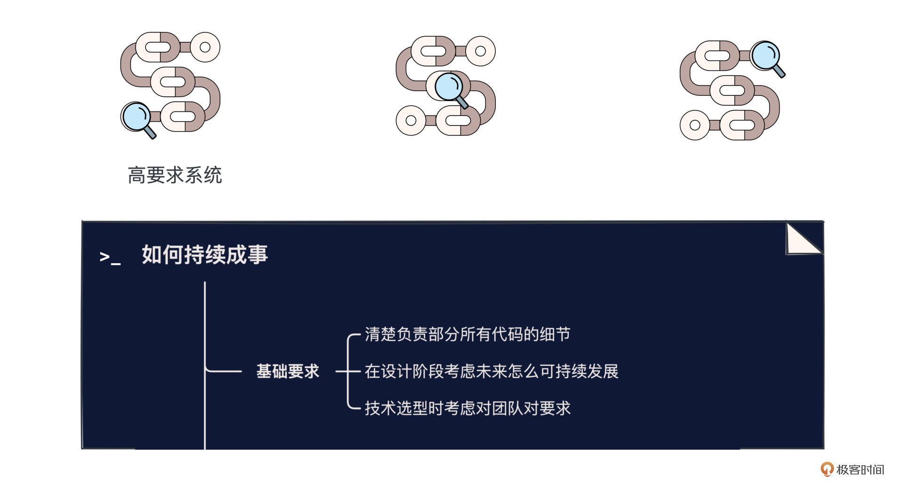
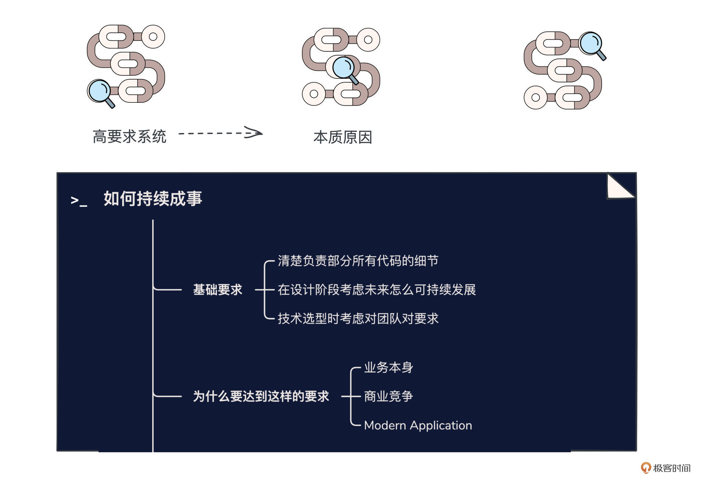
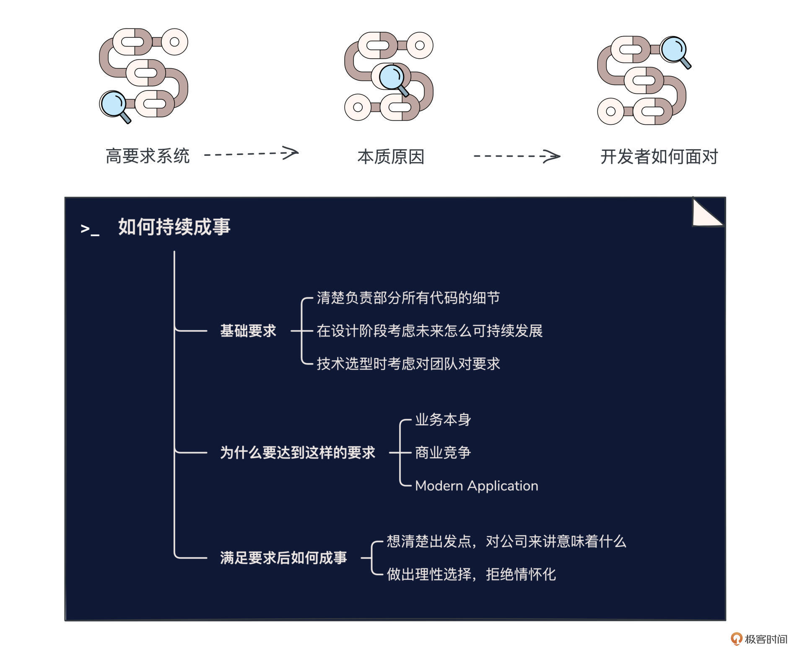

- 01 小厂项目：做程序员不难，难的是做职业程序员.md.html
- 02 小厂创业：做出一个产品，卖给所有人.md.html
- 03 淘宝HSF：能让淘宝出重大故障的就那批人.md.html
- 04 淘宝消防队：真正最优秀的程序员不应该是英雄.md.html
- 05 HBase_T4：Leader最重要的，说白了是要赌未来.md.html
- 06 异地多活：技术圈子的人，见过猪跑很重要.md.html
- 07 运维团队：我能干，只是我不想干而已.md.html
- 08 基础团队：研发效能部门，解决不了研发效能问题.md.html
- 09 统一调度：只是问题非常多而已，摔出来就行了.md.html
- 10 出走大厂：离职？还是不离职？这是一个问题.md.html
- 11 CEO心得：大厂出来创业，最大问题是对钱没概念.md.html
- 团队：在人身上，你到底愿意花多大精力？.md.html
- 开篇词 这一次，我们来采访毕玄.md.html
- 成事：技术人最大的问题就是情怀化.md.html
- 文化：你所在的团队，有多少人敢讲真话？.md.html
- 方向：技术演进，到底该怎么思考未来？.md.html
- 架构：架构师只是个角色，不是个岗位.md.html
- 番外：一位险些没上得了大学的青年，如何开启计算机征程.md.html
- 捐赠
成事：技术人最大的问题就是情怀化
你好，我是叶芊。- - 从今天开始，“高手锦囊”板块的5场专题研讨即将展开，我们会从毕玄的具体工作经历出发，在“个人成事、方向选择、团队带领、做事文化、架构修炼”这5个方面，希望能总结出可供借鉴的分析思路和实操方法。- - 毕竟对于这样一位技术敏感度如此之高的大佬，仿佛总是能提前站在下一个技术风口上，他是如何分析技术方向的，又是如何在一次次技术浪潮中求得自己和团队发展的，如果能总结出这种方法论，相信对你一定有很大帮助。- - 今天我们先来对HSF做复盘，毕竟第一次总是印象深刻，对于第一个真正自己从0做的访问量巨大且核心的系统，又出了大故障，他总结了哪些成事方法呢？
- 极客时间：复盘一下你进淘宝做HSF的过程，这是你做的第一个专业性要求高的系统，之前所有人都讲做一个网站，访问量从 200 万到1 个亿是不一样的，但没有人知道到底哪里不一样。经历过上线故障之后，你觉得大量级的系统到底是什么不一样？
毕玄：这一次之后我就懂了，量级其实不重要，重要的是要求。一个要求非常高的系统跟其他系统的差别是什么。
要求非常高的系统，核心是对整个系统的所有环节，你都要非常非常清楚。因为这是概率问题，你以前可能认为十万分之一的问题不会出现，但在一个大型系统里，它是必然会出现的。所以写一个小系统是容易的，写一个超大系统因为所有的概率问题都会爆发，对工程师的要求就变得非常非常高。
以前流行一篇文章，你在浏览器敲了一个回车发生了什么？这个问题其实挑战很大，说实话，到现在也没有多少人能非常好地回答出这个问题，因为背后有非常多链条。
你必须非常清楚你负责的那个部分从头到尾所有代码的细节，后来阿里对基础工程类的人都有这个要求，不能说我用了一个三方开源的东西，它出了故障，所以问题是它的，那当然不是，对我们来讲，都是你的故障。
在这个阶段，对工程师的要求已经完全不一样了，不是说你写完一个功能就拉倒，是你要能把代码维持着，这个挑战就非常非常大了。
极客时间：维持代码的成本，在开发之初也要考虑清楚。
毕玄：对。一个要在生产环境跑很多年的系统，未来怎么可持续地发展，在设计阶段是非常重要的。如果你做一个系统，面对1个用户和面对1000万个用户，只跑一个星期和可能要跑10年，都有很大差别的。这就是我最后交付的成本。
硬件也是一样，软硬件其实最终体现就是价格。我们看硬件，有些保修期很短，有些很长，有些寿命很长，有些寿命很短，决定了它背后的选择是差别很大的。当然，软件可能还做不到像硬件一样这么直接的映射，但差不多也是这个概念。
极客时间：所以为了保障对代码的掌握程度，大厂一般都自己写？
毕玄：如果过多用别人的东西，你是很难清楚掌握的，最好全部自己写，在出问题的关键时候，你可以迅速反应。当然你也不可能说一切都自己写，肯定会用到一些开源，所以我们会要求，你如果用任何开源的东西，对这个东西的所有代码也必须非常清楚，否则，在大规模系统里你一定会栽跟头。所以对大规模系统来讲，技术选型是很不一样的，包括对团队的要求也是。
很多开源的东西，大家觉得外面很火，阿里为什么不引入？其实很简单，引入进来，阿里又没有一个专业的团队来维护，那最好不要引入，你还不如自己写算了。这样代价肯定是也有，但对公司来讲可以接受。这个就是认知。

极客时间：我们继续一个系统的技术要求这个话题聊，如果说量级不是核心重要的，那对开发者来说，是什么导致了系统的高要求？
毕玄：其实本质是业务，你看现在的几个网站，业务要求的差别非常大，也奠定了他们背后技术难题的差别非常大，我后来接触了一些要求更高的公司对这一点的感受更强烈。
淘宝你说以前要求高，当然也高，但是说实话还没那么高，因为淘宝出完一个故障，如果几分钟后能恢复，交易量是能恢复的，会冲高然后恢复。所以淘宝说实话出一次故障也就这样，能发生什么？所以出了再处理是可以的，如果还能快速处理，大家就觉得你很牛了。
但像饿了么这种外卖公司，很大的挑战是他的系统在11点12点的时候不能出故障，关键是不能出，压根不能，这就不一样了，跟我们出之后再弥补差很多。
极客时间：因为外卖的业务竞争太激烈了？
毕玄：对，很简单你想，我饿了么跟美团打的这么辛苦，可能因为你们技术团队11点出一次故障，业务份额瞬间就变了，那还怎么玩，因为用户一定要点外卖，饿了么不能点，就会去美团点。包括当年滴滴跟快的的战争，快的背后是我们，当时我去快的呆了一段时间，处理各种问题，也是为了能让它更稳定，腾讯也派了大量工程师去滴滴。
这个时候技术真的是关键，因为谁稳定，就决定了用户会倾向谁，当然钱的补贴很重要，但技术也很重要。所以这个阶段，稳定性，已经是这些公司的核心能力了，本身就已经成为业务了。
这种对工程师的挑战非常非常大，因为一个不能出故障的系统是很难做的，但是如果说能接受出故障，给我1-5分钟的恢复时间，这两个系统的设计会有很大差别，因为出故障以后我可以想各种办法，但那个不能，我也很难回答。
所以我们做其他系统就会越来越明白，有些系统其实不像大家想象的那么简单。当时还有个段子，因为淘宝做的比较好，12306总出问题，大家都说淘宝双十一都没事，把他交给淘宝不就行了吗？但你如果仔细了解一下，会发现这些系统其实不一样的。
极客时间：什么不一样，可以展开讲讲吗？
毕玄：12306这种是涉及民生类型的，像饿了么也可以认为涉及民生，包括共享单车都是，银行、金融这种就更不用说了。
到民生这种，挑战是挺复杂的，12306交给淘宝也不好解决，因为它和淘宝最大的区别是库存。淘宝的库存是静态的，买一个商品有多少库存，减1就好了，比方说我能卖1000件，那我减就行，虽然是高并发但也没什么，排队就好了。但你看12306最复杂的就是库存。
因为买一张火车票，从A站到B站中间有很多种可能性，是一个动态算库存的过程，但库存这个东西压力是最大的，还要动态算，淘宝都没想过这个问题该怎么解决，因为淘宝在库存上也很痛苦，但那也只是单品。
极客时间：所以和大家想的不一样，民生相关的系统，像12306、银行，看着业务很简单，但背后是不能出问题。
毕玄：对，包括以前我们觉得金融行业落后，像银行，你看看你们，做个变更简直了怎么这么难？后来我们懂了，如果我们是你们，估计也会变得那么严格，因为影响面是不一样的，银行只要哪一天钱取不出来，可能会立刻引发社会动荡，你说你是技术故障，别人可能都不信。
淘宝说实话并没有影响民生，而且商业竞争还不到出了问题用户就去另一个的程度。像外卖、打车太明显了，某天你份额异常飙升，基本是因为你的竞争对手挂了，根本就不是你业务做得多好。
现在，软件的核心系统对工程师的要求在直线上升，说实话新一代的互联网工程师是比我们更难的，因为我们有时间去成长，他们其实没有，上来就是必须做到这样。我们是出了无数次故障，然后慢慢学会的，知道每个地方是什么原因，但他们就真的太难了，因为没有机会。
极客时间：你说新一代互联网工程师更难，为什么会产生这个差别？和以前相比，你觉得现在这一代工程师面对的新问题是什么？
毕玄：现在软件的要求跟以前的软件有很多差别，以前AWS取了一个名字，我们觉得很土，但后来觉得这名字也还不错，AWS给现在的软件取了一个新的定义，叫Modern Application。
如果大家去看以前的软件，一是相对来讲功能比较单一化，不会太复杂，现在大家要做的软件上来复杂度就比较高，软件要链接的东西更多。以前是我只实现一个功能，现在你看到的可能只是一个功能，但背后其实是N多功能叠加起来的，都是一个很复杂的公式，所以软件复杂度就很高。比如说外卖，背后涉及的链条非常长，软件写起来就很复杂的，不像以前我们很简单，这就是时代发展。
第二，以前的软件都是有成长期的，因为成长期很长，它对稳定性、可用性的要求不会那么高，以前大家不能用，也能接受，不能用就不能用，我可以换人工。但现在不一样了。
现在软件的成长周期太短了，在中国你从0做到1000万用户，以前要很多年，现在可能是几个月的事，这就完蛋了，淘宝当时能花一年来搞架构演进，现在的公司哪有这个时间，没等搞完他就倒闭了；而且这种倒闭就太冤了，我本来发展得很好，因为我发展得太好，用户量太大，系统撑不住，所以挂了，这简直了，发展不好挂了也就算了。
但现在技术侧就会面临这个问题，你的成长时间非常短，商业竞争非常激烈。当年不是这样的，淘宝起来的时候有竞对吗？自从把eBay踢出去，至少在那几年是没有竞争对手的，所以，稳定性等等都不重要，把业务、功能各种都做好就行了。
极客时间：所以还是回归到了业务、商业层面，当时如果淘宝有竞争对手，对业务和技术的态度会不一样？
毕玄：我觉得很多都会不一样。但是现在中国不是这样了，现在你做了A，只要能起来一点点，你可能会发现中国瞬间诞生了100家做A的公司，那你要求的技术门槛就直接拔高了。
说白了就是利润空间的问题，一个行业只要开始赚钱，在中国绝对会卷到死。在海外这点会好很多，因为海外看你已经赚了那么多钱，那我还是不要做这个行业了，他会觉得我的机会很少。但中国不会这么看，中国会觉得，哇！他那么赚钱，我也可以做。
极客时间：不同时代的软件，以前就看业务，现在还要求技术门槛。
毕玄：以前技术真的不是核心，对业务来讲，说实话一点都不重要。
淘宝最早根本不认为技术有什么重要的，反正能用钱解决的，我全部用钱解决，技术最好不要干，最好全部是写业务代码做需求的。不要说我有一个团队是不做业务的，全部在研究什么基础技术，那完蛋了，因为这就是养人，而且这种人通常又比较贵，养一帮这种人都是成本。但现在不行。
现在很多公司上来如果技术没有达到一定的分数线，可能业务都没机会做，就已经挂了。因为中国用户被训练出来了，对体验的要求非常高，中国用户点一下恨不得立刻下一页，如果还多要转几下，他就放弃了，太卷了，但海外不会。这些背后全是巨大的投入，不管是人员、还是IT成本。
这就是现代，后来我们很认可AWS讲要跟原来区分开，当然它也是告诉你，为什么现在很多公司，尤其是初创还没有那么稳定的公司，应该用云，其实就是分数线。因为你用，至少一开始就一定达到了分数线，然后你可以更专注在业务上。但以前不存在这个问题。
极客时间：系统的技术要求变高，之前和现代的界限，是什么时候开始的呢？
毕玄：中国我觉得就是移动起来。在PC时代，你看竞争其实不是很激烈，那个时候互联网还没爆发，没让大家觉得做这行有多赚钱。当然还有更赚钱的，当然也不能做。然后，大家突然间发现做互联网是最赚钱的，中国肯定卷死，这是中国最痛苦的地方。
极客时间：移动互联网起来的时候，大家都觉得怎么着做个5年10年的，但没有想到这么快，客户端没几年就发展到饱和了。
毕玄：因为PC就很多年。
极客时间：为什么移动时代会发展得这么快？
毕玄：我觉得跟中国手机发展的比较好有关系，然后网络条件比较好，国外其实是因为网络太差，你想在印度点一下那么慢，那还是不要用了，手机也差。但中国这些基础设施太好了，基础设施真的是关键，基础设施越好，上面就越会爆发无数的可能。

极客时间：关于HSF前面聊了这么多，主要是超大系统对程序员开发能力上的要求，在具体的技术选型上，之前你也在很多文章中反思用OSGi是非常错误的决定。
毕玄：对是的。
极客时间：现在你再去做HSF的技术选型会有不同吗？
毕玄：不会，我觉得还是错的。这是我后来总结的，技术的人最大的问题是太情怀化。
我以前选择OSGi最大的出发点是什么？就是情怀。因为所有人都知道我出名是因为OSGi，很多人在我来了淘宝以后都问我：淘宝用OSGi吗？我说没用，这个对我这种技术人还是有点伤害。因为支付宝也用OSGi，我跟阿玺他们都很熟，他们用，我不用，他们又经常找我问问题，后来我就觉得那不行，淘宝也得用。这就是情怀，纯粹是情怀。
很多技术人做一个决定，其实他的出发点就是不对的，他的出发点就是情怀。
极客时间：但大家可能会举Linux的例子，很多做了最伟大技术的人，可能就是出于情怀。
毕玄：但我觉得在公司的层面，肯定是不能那么干的。所有的公司都是一家商业公司，那商业公司里做的所有事情，确实应该要对这家公司意味着什么。
所以关键是反思选择把原来的东西改造成基于OSGi的，对当时这家公司来讲，对客户、用户来讲，意味着什么？到底有没有帮助？是不是一个很好的长期发展选择？如果他的问题，你其实没有任何解决作用，那还不如以前，因为新方案一定会带来很多新的问题。
很多技术人，做决定最大的问题就是情怀太美了。比如说很多架构师Leader他为什么做这件事，可能就是技术上觉得这个东西看着不爽，想把它改的更完美一点。技术人确实有这样的癖好，因为技术这玩意确实可以很完美化，我觉得这个架构看起来不好看，这个代码看起来可以写的更好。
极客时间：但是从商业上看，把代码、架构改得更好看这些都是成本。
毕玄：对，商业是一个妥协的问题，事实上，一个平台要做好，架构师最大的挑战就是做平衡。所以在阿里我们面试很多P8升P9的架构师，问的核心话题都是你在这一轮架构设计里面做过什么选择和平衡，这才是最难的，而不是你做了什么很好看的玩意，一个看起来很完美的架构，最后有可能对公司是极大的伤害。
极客时间：这是业务上的考虑，是不是也有团队上的？因为后来听说你要做别的业务，但HSF这个项目用的技术栈又是OSGi，所以想托给其他人负责维护非常难？
毕玄：是的，这个肯定有影响。因为你对整个团队的要求变高了，这很痛苦的，未来团队的招人等等都是大问题，包括团队的人出去以后，他们其实也会各种担心。
后来我跟很多人聊，包括有技术情怀的，他觉得有个语言特别好，用这个可以写一个更好的、性能更高的东西，对这家公司会有很大帮助。这个出发点看起来没错，因为出发点是对工作业务有帮助。
但这里没有考虑到一个问题，如果你离开了那个团队，这玩意谁能搞定？如果没有你在，就没人能接，那就是你给公司挖了一个坑，然后公司还不能把你怎么样，这不就是坑公司？
所以很多时候讨论语言选择是一个最无聊的话题，因为语言的选择，事实上不是单一爱好的问题，是我站在公司整个层面上，包括人才储备上，做的综合判断，不是说我觉得这门语言多牛，这不重要，每门语言都有自己很适合的地方，否则它为什么活着呢？
极客时间：你这么重视对公司、团队方面的考虑和权衡，在技术人里不是太常见，你是怎么意识到这一点的？是你在后面的项目经历里慢慢体会的？
毕玄：这一点其实是我后面一个老板对我的影响，七公，就现在淘特的负责人。
那一年我被提名P8P9的晋升，写完PPT他帮我看了一下，然后他说你这个PPT最大的问题就是没有讲清楚你做这个事情的意义是什么，就是技术的出发点。
他说我技术层面当然没有问题，都讲的很好，但越高级别的人，越需要回答的问题是你为什么要干这件事情，而不是你怎么干这件事情，以及怎么解决里面各种各样的技术难题，这些是偏执行层面的，当然也需要，因为一家公司肯定有很多技术上非常难的事情需要人解决，但是更需要的是，有人去思考这家公司到底要做什么？为什么要做这件事？这是最大挑战。
他那次跟我聊了之后，我一定程度上开窍了，后来我所有的技术规划都是以这为出发点。很多技术的人可能很难接受这个，但这就是你走向成熟化的必然。因为我们也能看到有些技术很神的，可能有纯粹的技术立项，这种确实很好，但关键是在中国的生存环境比较困难。

水友讨论区
到这里今天的讨论就暂时结束了。理解了毕玄做选择的出发点，我们再回看之前他的所有转岗决定，背后的理由是清晰且一致的。
在一个要求非常高的系统，你的敌人叫做墨菲定律，开发者需要具备更高的代码掌握程度，而且现代系统，因为业务复杂度和商业竞争度在不断提升，对开发者的要求也越来越高。
但对技术人来说，最致命的障碍常常并不因为外界，而是因为自己，在技术选型上，想清楚你的出发点是最重要的，一名成熟的技术人需要从对公司、对客户/用户，以及对团队的各角度，想清楚自己做事的意义是什么。这是毕玄做事且能成事的底层逻辑。
不知道你对今天讨论的哪个部分感兴趣，我还是列了几个讨论的话题：
- AWS说的Modern Application，作为身处其中的开发者，你有哪些感受呢？回顾自己做过的系统，要求是什么样的？你觉得挑战是什么？
- 毕玄做事，他认为重要的是想清楚对公司/客户/用户来讲到底有没有帮助，是不是一个很好的长期发展选择。你做事的出发点是什么呢？关于技术人的情怀问题，你见过哪些坑？你有给团队/公司挖过坑吗？
欢迎留言交流，聊聊自己当年（或者现在）炫技的那些事。
下一讲我们聊一聊到底该如何思考技术演进方向，下一讲见。
拓展阅读
之前毕玄有自曝过自己因为技术情怀犯过一些错误：- 技术人员的情结- 我在系统设计上犯过的14个错
© 2019 - 2023 Liangliang Lee. Powered by gin and hexo-theme-book.